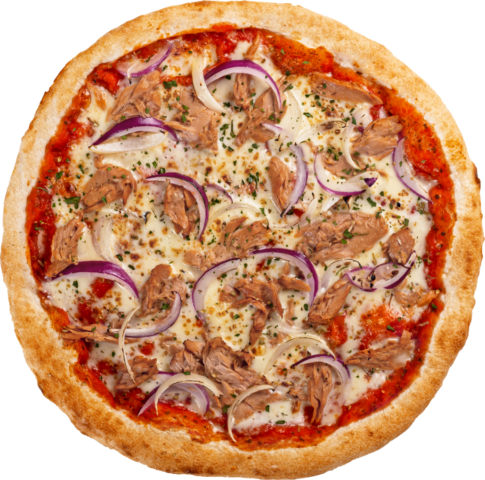

Tonno Pizza

Ingredients:
- Pizza dough
- Tomato sauce
- Shredded mozzarella cheese
- Canned tuna
- Sliced red onions
- Olives (optional)
Instructions:
- Preheat oven to 475°F (245°C).
- Roll out pizza dough on a floured surface to your desired thickness.
- Spread tomato sauce evenly over the dough.
- Sprinkle shredded mozzarella cheese over the sauce.
- Distribute canned tuna and sliced red onions on top of the cheese.
- Add olives if desired.
- Bake in the preheated oven for 12-15 minutes, or until the crust is golden and the cheese is bubbly.
- Remove from oven, let cool for a few minutes, then slice and serve.
Home